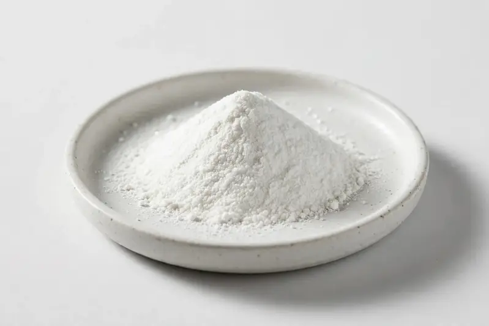

Paraxanthine — high-purity caffeine metabolite for energy and sports-nutrition formulations.

Overview
Paraxanthine (1,7-dimethylxanthine) is the primary human metabolite of caffeine, supplied here as a standalone powder for formulators building energy and sports-nutrition products. Buyers commonly request high-purity grades and defined assay values. As a Xi'an-based trading company we source through partner producers and confirm feasibility once your target specification is received.
Specifications below reflect commonly requested options in the market — not a stock list. Share your target spec and we'll confirm exactly what we can supply, honestly.
| Specification | Details |
|---|---|
| Botanical identity | Paraxanthine powder |
| Marker compound | Commonly requested spec grades: high-purity assay (HPLC method); actual specs confirmed on inquiry |
| Appearance | White to off-white fine powder |
| Mesh size | Typically 80–100 mesh (confirm per inquiry) |
| Testing | COA/TDS arranged on request; scope agreed per your spec |
Applications
Documentation
We don't claim in-house labs or certifications we don't hold. COA and TDS documents can be arranged on request, and testing scope is agreed against your specification before supply.
FAQ
Related products
Hesperidin (Citrus spp.)
Key marker: Hesperidin 90-98%
View specs →Betaine (trimethylglycine)
Key marker: Betaine 96-99%
View specs →Theobroma cacao
Key marker: Theobromine 10-20%
View specs →Rubus idaeus
Key marker: Tannin Content
View specs →Ulmus rubra
Key marker: Mucilage Content
View specs →Send your target spec and volumes — we'll respond with a tailored quotation.
Request a Quote